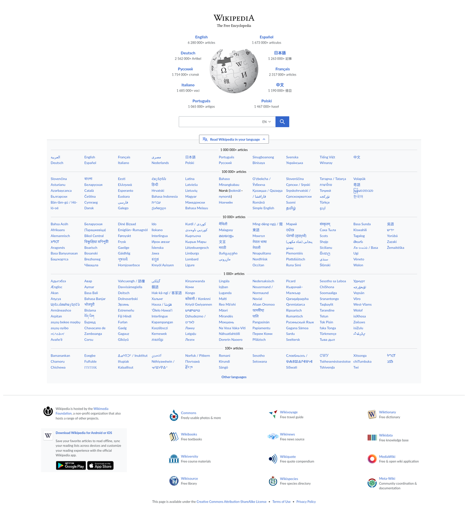

Веб-сайт: визначення й застосування
Веб-сайт — це сукупність логічно зв'язаної гіпертекстової інформації, оформленої у вигляді окремих сторінок і доступної в мережі Інтернет.
Історія
Подібне визначення веб-сайту було правильним на початку існування Інтернету, коли Мережа і веб-сайти використовувалися в основному як розважальна система. До кінця 90-х років веб-сайти дійсно були в основному статичними сторінками. Для створення веб-сайту було потрібне лише знання мови гіпертекстової розмітки — HTML. Якщо ж сторінка надавала якісь програмні засоби — це були виключно засоби, що міг надати сервер, на якому розташований веб-сайт. Про зручність і красу тогочасних веб-сайтів взагалі особливо не доводилося говорити. Час спливає, розвиваються мови програмування, розширюються канали передачі інформації... Зараз Інтернет вже є самодостатньою галуззю економіки, а веб-сайти стали повноправними представництвами фірм в Інтернеті. Сьогодні мільйони людей вранці встають і йдуть на роботу в... Інтернет. Їх офісами є веб-сайти.
Веб-сайт — сучасне визначення
Веб-сайт — це сукупність програмних, інформаційних, а також медійних засобів, логічно пов'язаних між собою. По суті ж веб-сайт — це віддзеркалення успішності фірми, її обличчя.
Завдання й цілі сучасного веб-сайту
Веб-сайт виконує такі основні завдання:
- реклама продукції, послуг, ідей. Правильно зроблений веб-сайт із легкістю приведе клієнта до висновку про необхідність покупки товару, або послуг, або ідей, що пропагуються на ньому;
- продаж товарів, послуг, інформації, ідей. У сучасної людини немає багато часу для ходіння по магазинах. Тому можливість замовлення товарів і послуг, не відходячи від комп'ютера, значно розширює можливості і клієнта, і продавця;
- безкоштовне надання інформації або послуг. Насправді надання інформації або послуг — це засіб залучення відвідувачів до даного ресурсу для здобуття, наприклад, статистичної інформації або ж для показу реклами, якщо це рекламний майданчик;
- підтримка клієнтів.
Типи веб-сайтів.
- Статичні веб-сайти
-
Рекламні веб-сайти
- Веб-сайти можуть створюватися виключно в рекламно-промоутерських цілях. Такі сайти безпосередньо не займаються продажем, їх завдання полягає в донесенні до цільової аудиторії рекламної інформації, і створюються вони з розрахунку на певне коло товарів або послуг. Зазвичай такі сайти виконуються з використанням великої кількості графіки, flash-анімації. Для залучення клієнтів на сайт використовують ігрові й розважальні методи
-
Веб-сайти-продавці
- Для таких сайтів характерна наявність описового рекламного матеріалу для товарів або послуг, каталог даних товарів або послуг, інформації про фірму-продавця, а також контактна інформація. Додаткові сервіси, такі, як корисна інформація, зручність замовлення через сайт у поєднанні із грамотною розкруткою, можуть зробити веб-сайт привабливим для сторонніх рекламодавців.
-
Веб-сайти-"альтруїсти"
- Інформаційні веб-сайти, або сайти, які надають деякі безкоштовні сервіси, теж потрібно обслуговувати, розвивати, а отже, вкладати в них кошти. Але проекти, які не приносять прибуток, довго не живуть, тому для таких веб-сайтів характерне заробляння грошей або на рекламі, або на зборі статистичних даних. На таких сайтах дуже часто пропонують зареєструватися, аби отримати маленький додатковий сервіс. І що в результаті про нас дізнаються подібні веб-сайти? Все: від нашого браузера й роздільна здатність екрану до місця роботи й рахунку в банку. Якщо ж ви не реєструєтеся на сайті, то все одно можна взнати ваші смаки, психологічний портрет, приблизний вік, ну й, нарешті, вам можна показати багато реклами.
-
Веб-сайти для підтримки
- Зазвичай на таких сайтах розміщують оновлення для програмних продуктів, новини; якщо йдеться про сайт банку, це може бути система
- Портали
- Блоги
Це не повний перелік типів сайтів. Динамічний веб-сайт може змінюватися у процесі взаємодії з відвідувачем, а статичний надає всім відвідувачам однакову інформацію.
Сайти можна класифікувати за доступністю сервісів, фізичним розташуванням і призначенням
Рейтинг сайтів за популярністю
Популярність сайтів визначається кількістю відвідувачів, що переглянули принаймні одну сторінку
Доповнення
Більше інформаціі можна подивитися тут Вікіпедія - Вебсайт
Приклад
Це приклад однієї сторінки з всіма відомого веб-сайта
